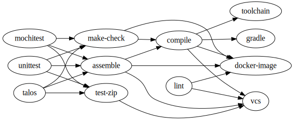
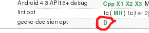

In-Tree Task Graphs
Dustin J. Mitchell - TaskCluster Team
Problem
Define all of the tasks that need to be performed for a push to a Gecko repository, and all of the dependencies between them.
- Defined in-tree
- Testable in try
- Support performing minimal work, e.g., artifact builds
Task Graphs
- Task: Single unit of work (build browser; run test suite); posessing
- A Kind: build, test, docker-image creation, toolchain packaging, etc.
- Some Attributes: used to select tasks in try
- Task Graph: Collection of tasks with dependency links (tests depend on builds)
- Parameters: Inputs to task-graph generation (revision, commit message, etc.)

Graph Generation
- For each kind, generate the complete set of tasks → full task set
- Generate dependency links between tasks → full task graph
- Select target tasks (try syntax or per-tree algorithm) → target task set
- Calculate transitive closure (all required tasks for the target set) → target task graph
- Drop tasks that do not need to be performed → optimized task graph
./mach taskgraph tasks -p parameters.yml
./mach taskgraph full -p parameters.yml
./mach taskgraph target -p parameters.yml
./mach taskgraph target-graph -p parameters.yml
./mach taskgraph optimized -p parameters.yml
Decision Tasks
- On push mozilla-taskcluster creates a task based on ${topsrcdir}/.taskcluster.yml
- That decision task runs ./mach taskgraph decision --head-ref='8a257036' ..
- ..which generates the optimized task graph, with copious logging
- ..and creates all of the tasks in that graph

Task Specification
Currently all tasks are "legacy" - still generated from the old, awful, YAML files.
Find the source under ${topsrcdir}/taskcluster.
Why Do I Care?
- Define your own task types, experiment in try, get r+, land!
- Optimized graphs can provide results on try in minutes (e.g., test only change)
- Enable or disable that job on that branch yourself
- Want try syntax on your development branch? No problem!
/